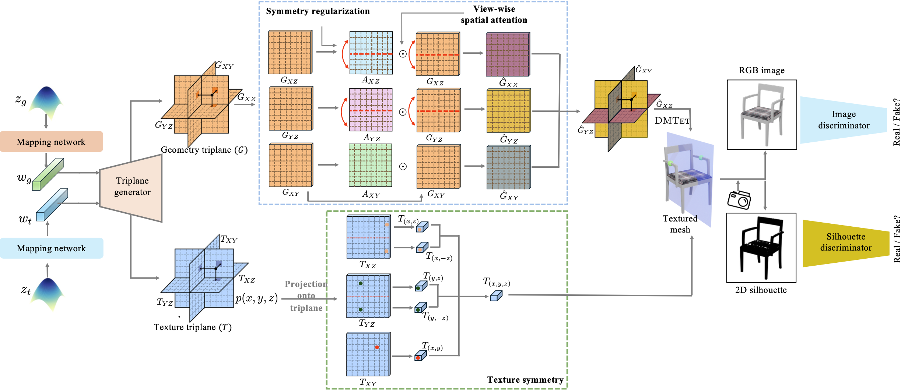

Despite the growing success of 3D-aware GANs, which can be trained on 2D images to generate high-quality 3D assets, they still rely on multi-view images with camera annotations to synthesize sufficient details from all viewing directions. However, the scarce availability of calibrated multi-view image datasets, especially in comparison to single-view images, has limited the potential of 3D GANs. Moreover, while bypassing camera pose annotations with a camera distribution constraint reduces dependence on exact camera parameters, it still struggles to generate a consistent orientation of 3D assets. To this end, we propose SYM3D, a novel 3D-aware GAN designed to leverage the prevalent reflectional symmetry structure found in natural and man-made objects, alongside a proposed view-aware spatial attention mechanism in learning the 3D representation. We evaluate SYM3D on both synthetic (ShapeNet Chairs, Cars, and Airplanes) and real-world datasets (ABO-Chair), demonstrating its superior performance in capturing detailed geometry and texture, even when trained on only single-view images. Finally, we demonstrate the effectiveness of incorporating symmetry regularization in helping reduce artifacts in the modeling of 3D assets in the text-to-3D task.
Overview

Generated 3D Assets Blender (chair,car)
Generated 3D Assets (RGB)
Text to 3D W/O SYM
Text to 3D W SYM
BibTeX
@article{yang2024sym3d,
author = {Yang, Jing and Fogarty, Kyle and Zhong, Fangcheng and Oztireli, Cengiz},
title = {SYM3D: Learning Symmetric Triplanes for Better 3D-Awareness of GANs},
journal = {arXiv},
year = {2024},
}